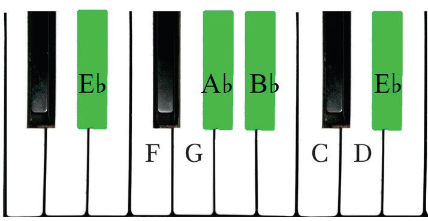
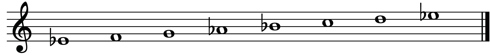
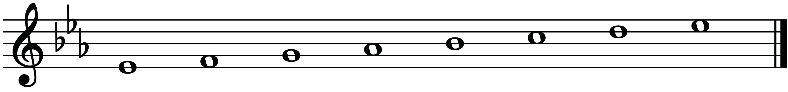

- (vi) From note C to D = Tone (T)
- (vii) From note D to E♭ = Semitone (S)
Therefore, the order of the E♭ major scale obtained will be E♭-F-G-A♭-B♭-C-D-E♭. Figures 2.25, 2.26 and 2.27 show the E♭ major scale constructed on a piano and staff.

TTSTTTS

TTSTTTS

Activity 2.6

Construct the E♭ major scale in ascending and descending order on the bass staff without a key signature.